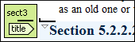
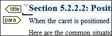
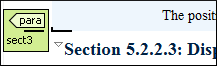
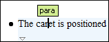
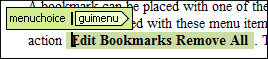
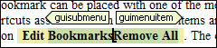
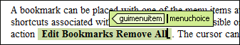

Visual Hints for the Cursor Position
When the cursor is positioned inside a new context, a tooltip will be shown for a couple of seconds displaying the position of the cursor relative to the context of the current element.
Here are some of the common situations that can be encountered:
-
Before first block - The cursor is positioned before the first block child of the current node.

-
Between two block elements - The cursor is positioned between two block elements.

-
After last block - The cursor is positioned after the last block element child of the current node.

-
Inside a node - The cursor is positioned inside a node.

-
Before an inline element - The cursor is positioned inside an element, before a child inline element.

-
Between two inline elements - The cursor is positioned between two inline elements.

-
After an inline element - The cursor is positioned inside an element, after a child inline element.

The nodes in these cases are displayed in the tooltip window using the element names.
To deactivate this feature, open the Preferences dialog box , go to , and deselect the Show cursor position tooltip option. Even if this option is deselected, you can still display the position tooltip by pressing Shift+F2.
 Tags display
mode drop-down menu.
Tags display
mode drop-down menu.Location Tooltip
When editing XML documents in a visual environment, you might find it difficult to position the cursor between certain tags that do not have a visual representation. To counterbalance this, Oxygen XML Editor displays a transparent preview of the position information, called the Location Tooltip:
- You are editing the document in one of the following tags display modes: Inline Tags, Partial Tags, No Tags.
- The mouse pointer is moved between block elements.
To activate or deactivate this feature, use the Show location tooltip on mouse move option in the Cursor Navigation preferences page.